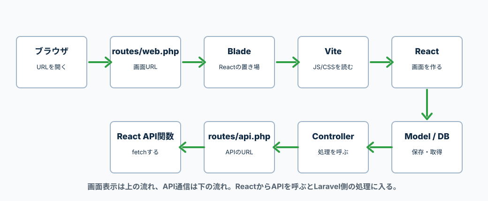
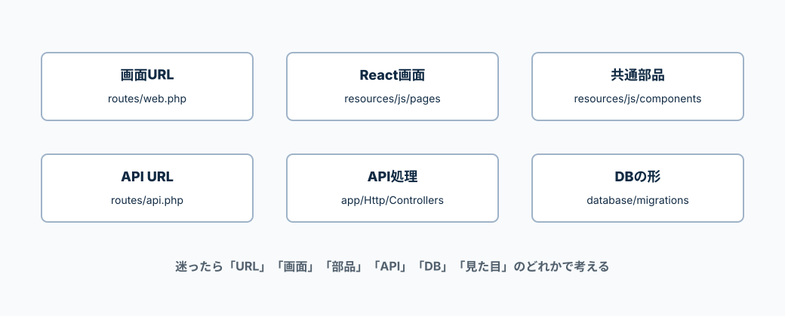

Laravel、React、API、JavaScript、TypeScriptがどこでつながるかを見るページ。
迷ったらまずここを見る。
細かいコードを読む前に、「何を作りたいのか」と「どのファイルに書くのか」を決める。
例えば、URLを増やしたいならルーティング、画面を変えたいならReactのpage、DBを変えたいならmigrationを見る。
最初にブラウザでURLを開く時は、LaravelのwebルートからBladeを返し、BladeがReactを読み込む。
画面表示後にデータが必要になったら、ReactがLaravel APIへfetchする。

迷ったら、まずこの表で書く場所を決める。
ファイル名まで決まると、次に読むページも決めやすい。

| 画面URLを増やす |
routes/web.php LaravelがどのURLでBladeを返すかを書く。React Routerを使う時は、どのURLでも同じBladeを返す設定にする。 |
|---|---|
| Reactの画面を作る |
resources/js/pages/Index.jsx resources/js/pages/Category.jsx 1ページ分の画面を書く。Todo一覧ページ、カテゴリページなど。 |
| ReactのURLを分ける |
resources/js/routes/routes.js resources/js/routes/AppRoutes.jsx React Routerで、URLと表示するpageを対応させる。 |
| 共通部品を作る |
resources/js/components/Header.jsx resources/js/components/Button.jsx 複数のページで使うヘッダー、ボタン、フォームを書く。 |
| 見た目を変える |
resources/css/pages resources/css/components page用CSSとcomponent用CSSを分ける。 |
| APIのURLを作る |
routes/api.php /api/todos のようなAPI用URLを書く。 |
| APIの処理を書く |
app/Http/Controllers/Api/TodoController.php 一覧取得、登録、更新、削除などの処理を書く。 |
| バリデーションを書く |
app/Http/Requests/StoreTodoRequest.php app/Http/Requests/UpdateTodoRequest.php 入力チェックはフォームリクエストに書く。コントローラには基本書かない。 |
| DBのテーブルを作る |
database/migrations テーブル名、カラム名、型を書く。 |
| DB操作の入口 |
app/Models/Todo.php どのカラムを保存できるか、booleanや日付の型変換を書く。 |
| JSONの形を整える |
app/Http/Resources/TodoResource.php Reactへ返すJSONの形を決める。 |
| ReactからAPIを呼ぶ |
resources/js/api/todoApi.js fetchを書く。ページ側にAPI通信を直接書きすぎない。 |
Todo機能を作るなら、この順番で進めると迷いにくい。
先にDBとAPI、次にReact画面、最後に見た目を整える。
| 1. DBの形を決める | database/migrations にtitleやis_doneを書く。 |
|---|---|
| 2. Modelを設定する | app/Models/Todo.php にfillableやcastsを書く。 |
| 3. APIのURLを作る | routes/api.php にapiResourceを書く。 |
| 4. APIの処理を書く | TodoController.php にindex、store、update、destroyを書く。 |
| 5. 入力チェックを書く | StoreTodoRequest.php にrequiredやmaxを書く。 |
| 6. JSONの形を作る | TodoResource.php にReactへ返す項目を書く。 |
| 7. ReactのAPI関数を書く | resources/js/api/todoApi.js にgetTodosやcreateTodoを書く。 |
| 8. Reactの画面を書く | resources/js/pages/Index.jsx で一覧表示とフォームを書く。 |
| 9. 部品に分ける | resources/js/components にHeader、Button、StoreFormを分ける。 |
| 10. 見た目を整える | resources/css にpage用、component用CSSを書く。 |
Laravel + ReactでTodoを作るなら、最初はこのくらいの構成を目安にする。
どのファイルが何の担当かを見ながら増やす。
app/
Http/
Controllers/
Api/
TodoController.php
Requests/
StoreTodoRequest.php
UpdateTodoRequest.php
Resources/
TodoResource.php
Models/
Todo.php
database/
migrations/
xxxx_xx_xx_xxxxxx_create_todos_table.php
routes/
web.php
api.php
resources/
views/
index.blade.php
js/
app.jsx
api/
todoApi.js
routes/
routes.js
AppRoutes.jsx
pages/
Index.jsx
Category.jsx
components/
Header.jsx
Button.jsx
StoreForm.jsx
css/
pages/
Index.css
Category.css
components/
Header.css
Button.css
StoreForm.css
vite.config.js